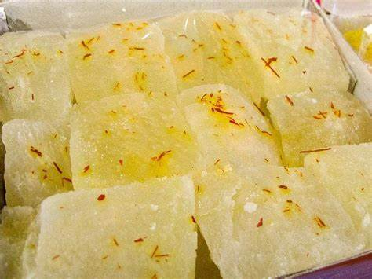
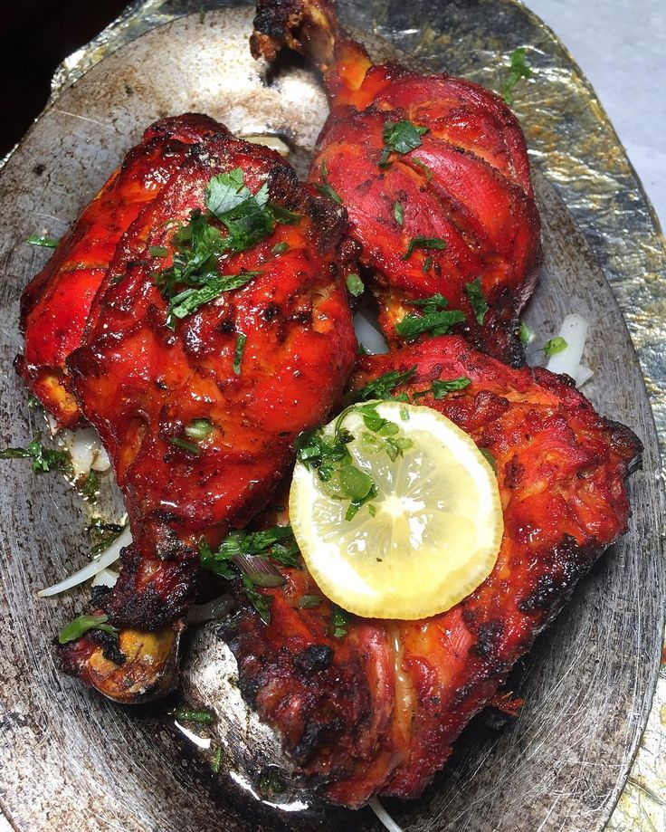
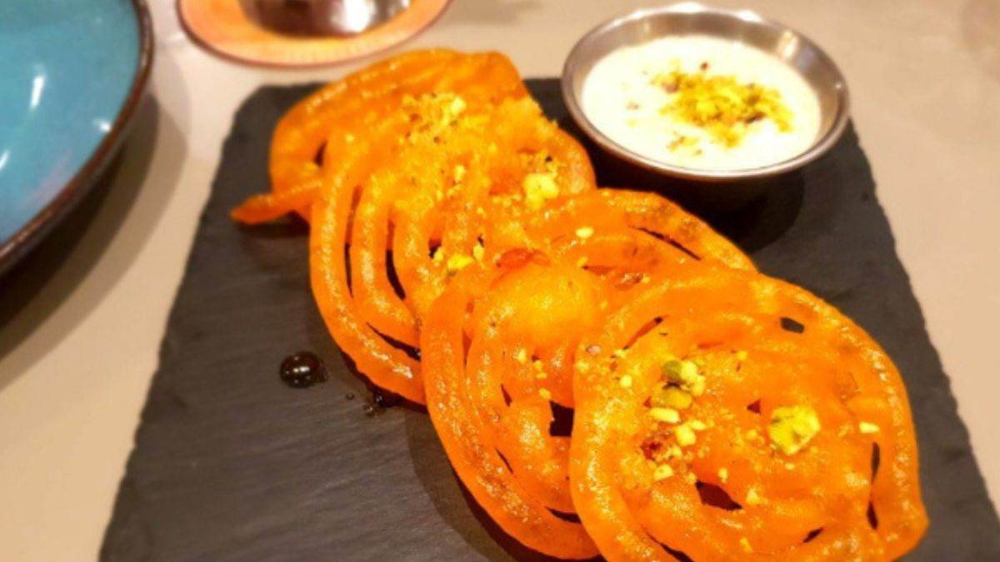
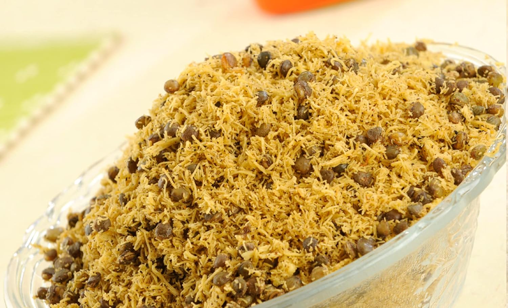
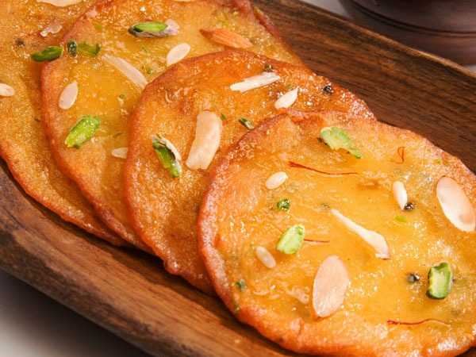
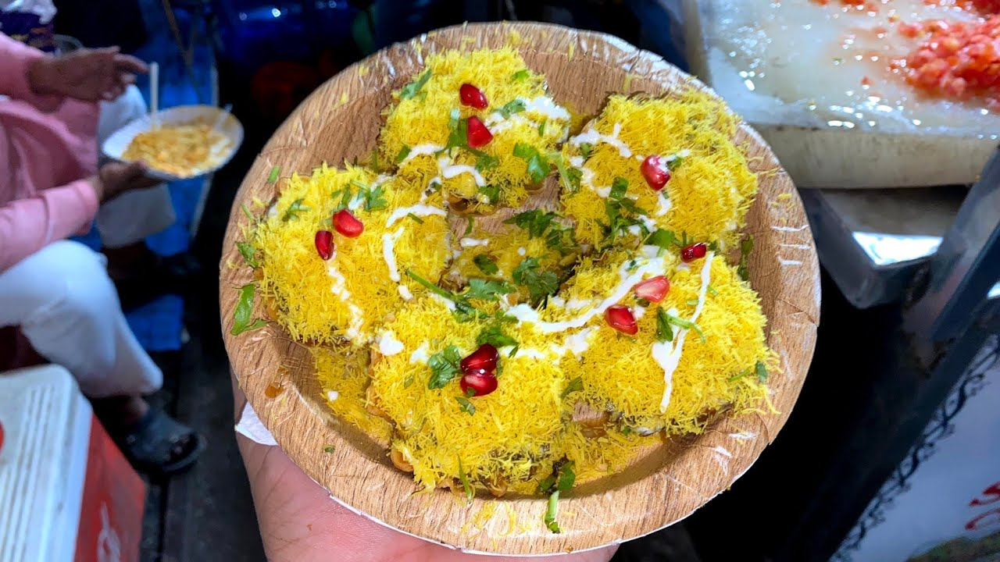

Petha is a famous sweet from Agra made from ash gourd and sugar. Soft, translucent, and often flavored with saffron or dry fruits, it is a beloved treat for tourists and locals alike.

Tandoori Chicken is a popular Agra dish made with marinated chicken cooked in a traditional tandoor. Juicy, smoky, and flavorful, it is enjoyed as a hearty meal or snack.

Bedai with Jalebi is a classic Agra breakfast, featuring spicy deep-fried lentil-stuffed bread served with sweet, syrupy jalebi. The combination of savory and sweet makes it a beloved local favorite.

Agra Ka Daal Moth is a spicy and crunchy lentil snack, popular in Agra. Savory and flavorful, it is often enjoyed with tea or as a munching snack.

Malpua is a sweet, deep-fried pancake soaked in sugar syrup, popular in Agra. Soft, flavorful, and indulgent, it is often served with rabri for extra richness.

Chaat is a popular Agra street food made with tangy, spicy, and sweet ingredients like potatoes, chickpeas, and chutneys. Crispy, flavorful, and refreshing, it is loved by locals and tourists alike.